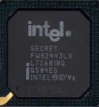

История
-

1996
Първата спецификация USB 1.0 е създадена от компанията Intel и пусната на пазара през 1996 г. Шината е създадена като връзка на периферните устройства към компютър и като наследник на цяла гама от интерфейси и портове, съчетавайки плюсовете им. Затова USB не се ограничава само до мишки и клавиатури, а се включва и към други периферни устройства като скенери и принтери. Имало е носители на информация като твърди дискове, също поддържани от USB 1.0 поради високата скорост на пренос, но рядко сет използват в действителност.
-

Един от първите чипсети, които поддържат USB протокола, е 440FX, чийто произход идва от Pentium Pro и по-късно е използван и в Pentium II. Той е слабо разпространен до вкарването на ATX-дънни платки. Причината за това може да се търси в редица факти, като например липсата на поддръжка на USB от тогавашните ОС Windows 95 и Windows NT 4.0, както и факта, че в началото е имало много малко USB устройства. Този криволичещ старт носи на шината прякора „Useless Serial Bus“ (Ненужна серийна шина).
-

1998
Към края на 1998 г. идва усъвършенстваната версия USB 1.1, която на първо време отстранява много неясноти и грешки при USB 1.0 и добавя Interrupt Out Transfer. Скоростта не е променена. По това време USB не е конкуренция на създадената от Apple FireWire (IEEE 1394), която в началото си (1995) предлага скорост на пренос до 400 Mbit/s, а от април 2003 – до 800 Mbit/s. Въпреки това от Apple започват да използват USB 1.1.
-

2000
През 2000 г. е представена спецификацията USB 2.0, която предлага скорост на трансфер 480 Mbit/s, като така си проправя път към твърдите дискове и видеокартите. Първите продукти обаче се появяват на пазара едва от 2002 г.
-
2008
През 2008 г. е представена спецификацията USB 3.0 Super Speed, за която се рекламира, че предлага скорост на трансфер 5 Gbit/s, но реално е ограничена до 4 Gbit/s. Максималната теоретична скорост се изчислява под 4 Gbit/s. Тази спецификация изисква и нови щекери, кабели и букси, които в голямата си част са съвместими със старите.
-
2011
Първите дънни платки с USB 3.0 навлизат през 2011. В същата година идва и отговорът на Intel в отбор с Apple – Thunderbolt. Thunderbolt е около 3 до 6 пъти по-бърз от USB 3.0 (2х10 Gbit/s) и съчетава в себе си други интерфейси, като eSATA и DisplayPort.